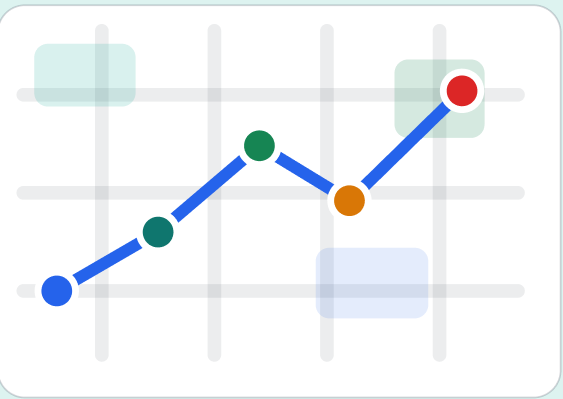

Barreras urbanas
Rampas bloqueadas, veredas dañadas, huecos y obras sin señalización.
Planifica rutas seguras, recibe alertas en tiempo real, activa guía por voz y reporta barreras urbanas durante tu desplazamiento.

Muchas personas con discapacidad encuentran obstáculos inesperados durante sus recorridos. Las aplicaciones tradicionales de mapas no muestran información específica sobre rampas, veredas, cruces seguros o barreras urbanas.
Rampas bloqueadas, veredas dañadas, huecos y obras sin señalización.
El usuario no sabe si una ruta será realmente segura o accesible.
La incertidumbre obliga a pedir ayuda o cambiar el trayecto.
Nuestra solución combina rutas accesibles, reportes colaborativos, alertas en tiempo real y asistencia por voz para mejorar la autonomía del usuario.
El usuario configura sus necesidades y busca rutas accesibles antes de salir.
La app informa obstáculos, cambios de ruta, cruces seguros y puntos importantes.
El usuario puede evaluar la ruta y reportar información útil para la comunidad.
Rutas que priorizan rampas, veredas amplias, cruces seguros y menor cantidad de obstáculos.
Alertas sobre obstáculos, zonas de riesgo o avisos durante el trayecto.
Indicaciones auditivas para usuarios con discapacidad visual.
La comunidad informa barreras urbanas y ayuda a mantener rutas actualizadas.
Alto contraste, botones visibles, textos claros y navegación sencilla.
Acceso a contactos o acciones rápidas para situaciones de riesgo.
Esta sección muestra un avance interactivo de algunas funciones importantes del producto.
Inicia sesión para continuar.
Regístrate para configurar tus preferencias de accesibilidad.
Selecciona las opciones que mejor se adapten a tus necesidades.
Ingresa tu destino y revisa una ruta accesible antes de iniciar tu desplazamiento.
Reporta barreras urbanas para mantener rutas actualizadas.
Configura indicaciones por voz para recibir apoyo durante tu desplazamiento.
Necesitan rutas con rampas transitables, veredas amplias, cruces seguros y caminos con menos barreras físicas.
Requieren guía por voz, alertas auditivas, indicaciones descriptivas y compatibilidad con herramientas de accesibilidad.
Selecciona tus necesidades de accesibilidad antes de buscar una ruta.
Ingresa tu destino y compara alternativas según accesibilidad y seguridad.
Recibe alertas, guía por voz y reporta obstáculos durante el trayecto.
Déjanos tus datos para recibir novedades sobre AccesiRuta y participar en futuras pruebas de usuario.